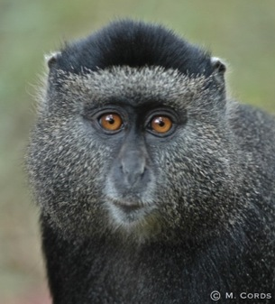

Data
This database contains individual-based life history data that have been collected from wild primate populations by nine working group participants over a minimum of 19 years. The purpose of collecting data of this type is to make comparative analyses that can shed light on the population dynamics and the social and ecological adaptations that have shaped both human and nonhuman primate evolution. Records in the database include mortality and fertility schedules across multiple primate taxa. The data are searchable and can be downloaded into csv format.
About example datasets
To illustrate the structure of the data, we provide example data sets, representing a subset of the actual database. Please visit the Biography page or Fertility page to download these files.
PLHDB version 2
- Technologies
- Database: PostgreSQL 9.5 (or higher)
- Website Theme: charitytrust
- Source Code
- Source code is available at GitHub.
PLHDB version 1
- Technologies
- Database: PostgreSQL 8.3
- Database ORM : Hibernate
- Programming Language: java
- Web Framework: Spring
- Other Libraries
- Website Theme: charitytrust
- Source Code
- Source code is available at GitHub.
Licensing
The software created by the PLHDB project is licensed under the GPL v3.
Credits
- Concept, content, and scientific requirements: the Evolutionary Ecology of Primate Life Histories Working Group, Susan C Alberts (Duke University, PI), Karen B Strier (University of Wisconsin-Madison, PI)
- Database and application programming: Hilmar Lapp (NESCent), Xianhua Liu (NESCent)
Publications
Karen B. Strier, Jeanne Altmann, Diane K. Brockman, Anne M. Bronikowski, Marina Cords, Linda M. Fedigan, Hilmar Lapp, Xianhua Liu, William F. Morris, Anne E. Pusey, Tara S. Stoinski and Susan C. Alberts. 2010. The Primate Life History Database: a unique shared ecological data resource. Methods in Ecology and Evolution 1(2): 199-211. doi:10.1111/j.2041-210X.2010.00023.x